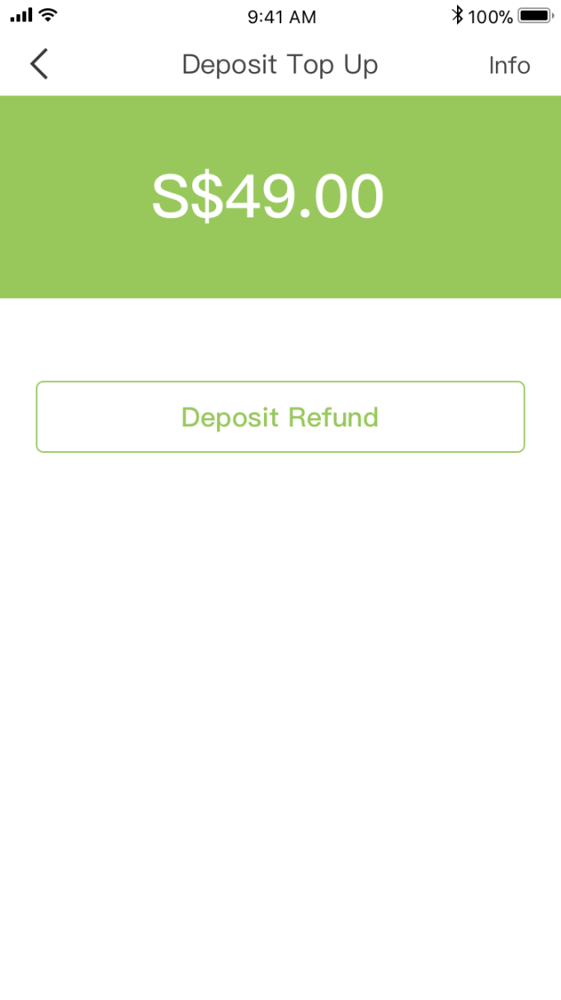

1)The deposit refers to a refundable amount paid by the user for the use of the E-Scooter service after registering the JustScoot account. The purpose of this deposit is to ensure that users comply with JustScoot’s Terms and Condition as well as Terms of Service.
JustScoot currently charges a refundable deposit of S$49.00 before users are able to start a ride with us. The deposit will not be converted to credits which will be charged upon ending a trip.
Users can apply for a refund of the deposit ("Refund") at any point of time. Justscoot will process the refund immediately after receiving your refund request and will credit the refund to the payment method chosen by the user previously. The refund of deposit will be reflected in your statement in 3-5 business days.
If you wish to apply for a refund of the deposit, please click [My Wallet] → [Deposit] → [Deposit Refund] to confirm the refund (refer to image below).
Your refund will be returned via the payment channel which you have previously used to pay the deposit.